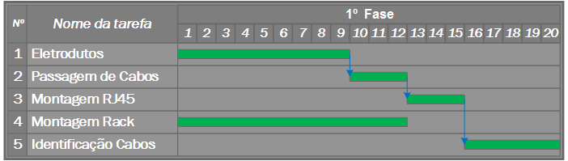
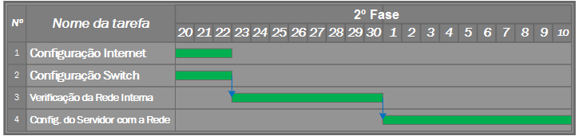
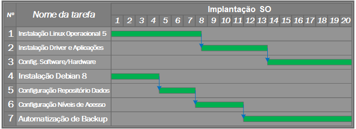
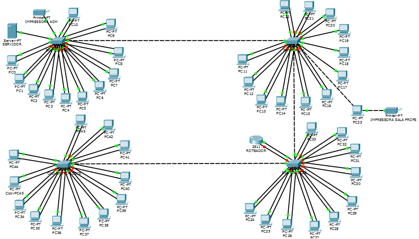
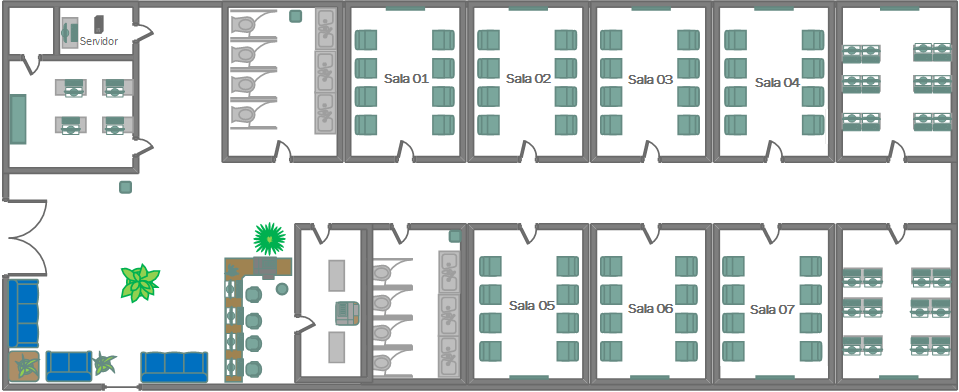

New Life
Caso de sucesso
ILS - International Linguistics School
Apresentação da Equipe
Equipe de Infraestrutura e Redes
Equipe de Sistemas Operacionais
Um pouco sobre o Carlos
Autor dos artigos: |

Sobre a ILS
“International Linguistics School”.
A Exigência
“O Grupo empresarial desejava abrir uma escola de idiomas de porte médio, devido ao baixo baixo capital de investimento, o grupo optou pela utilização de sistemas de código aberto em todos os departamentos (Administrativo e Acadêmico por exemplos)”.O Estudo
“Entendendo a necessidade do cliente”.A Solução
“Um ambiente moldado à inovação”.Planejamento
Planta do Sistema
“4 meses estudando a planta do prédio visando atender as normas ISO 27000 e 9000 em paralelo com o objetivo do ciente”.Equipamento
“2 meses sobre como atingir a excelência no equipamento sem elevar o custo”.Lucros
“Parceria e participação nos lucros”.Treinamento
“Uma equipe com alguns dos primeiros funcionários acompanharam grande parte do processo e receberam instruções e documentos para passar a todos funcionários”.Cronogramas
Cronograma de Rede
 *Manutenção inclusa em todos os estágios do processoCronograma de Rede
 *Manutenção inclusa em todos os estágios do processoCronograma de Sistemas
 *Manutenção e treinamento inclusas durante todos os estágios do processoEquipamentos
Preços dos equipamentos
| Equipamento | Valor Unit. | Quant. | Valor Total |
|---|---|---|---|
| Computador | R$ 1.420,00 | 45 | R$ 63,900.00 |
| Impressora | R$ 230.00 | 2 | R$ 460.00 |
| Servidor | R$ 2.410.00 | 1 | R$ 2.410,00 |
| Nobreak | R$ 620,00 | 1 | R$ 620,00 |
Preços dos equipamentos
| Equipamento | Valor Unit. | Quant. | Valor Total |
|---|---|---|---|
| Switch | R$ 620,00 | 4 | R$ 2.480,00 |
| Projetor | R$ 800,00 | 9 | R$ 7.200,00 |
| Roteador | R$ 535,00 | 1 | R$ 535,00 |
| Cabo (CAT6) | R$ 8,00 | 300 mts | R$ 2.400,00 |
| Valor total dos equipamentos | R$ 80.005,00 | ||
Serviços
Preço dos Serviços
| Serviço | Valor Unit. | Quant. | Valor Total |
|---|---|---|---|
| S.O. Administrativo e Acadêmico |
R$ 50.00 | 45 | R$ 2,250.00 |
| Servidor - Debian 8 | R$ 500.00 | 1 | R$ 500.00 |
| Cabeamento | R$ 200.00 | 47 | R$ 9,400.00 |
| Montagem e Instalação Rack |
R$ 500.00 | 1 | R$ 500.00 |
| Valor total de serviços | R$ 12,650.00 | ||
Total
R$ 92.655,00
*Valor referente a soma dos equipamentos + serviços.Redes e Diagramas
Planta de Rede
 *Criado com o software Cisco - Packet TracerPlanta Baixa
 *Criado com o software Microsoft Visio 2013Sistemas Operacionais
Debian 8
Requisitos Mínmos
- Processador: (AMD64/i386...)
- Memória Ram: 256MB
- Espaço em Disco: 10GB
Linux Educacional 5
Requisitos Mínimos
- Processador: Pentium 4, 1.5GHz (ou equivalente)
- Memória RAM: 1GB
- Espaço em Disco: 10GB
Softwares Acadêmicos
Fedena
Sistema de gerenciamento completo de instituições de ensino.
Libre Office 3
Uma suíte de escritório completa, ambiente de fácil de utilização e multiplataforma.
Web Livros
Segurança
O projeto foi implatado e apoiado nas exigências da Organização Internacional para Padronização
Apresentação dos Sistemas
Créditos
Apresentado por:
Andrey Naldoni - andreynaldoni@gmail.com
Carlos Henrique - 1932thx@gmail.com
Rodrigo Roberto - cerberus.santos@gmail.com
Paulo Barros - paulo.sb@live.com
Yunes Noronha - yunesnoronha@gmail.com
Special thanks to Hakim El Hattab
Powered By Reveal.js
FATEC Praia Grande - Análise e Desenvolvimento de Sistemas
Sistemas Operacionais II - Profº: Fábio Pessoa de Sá